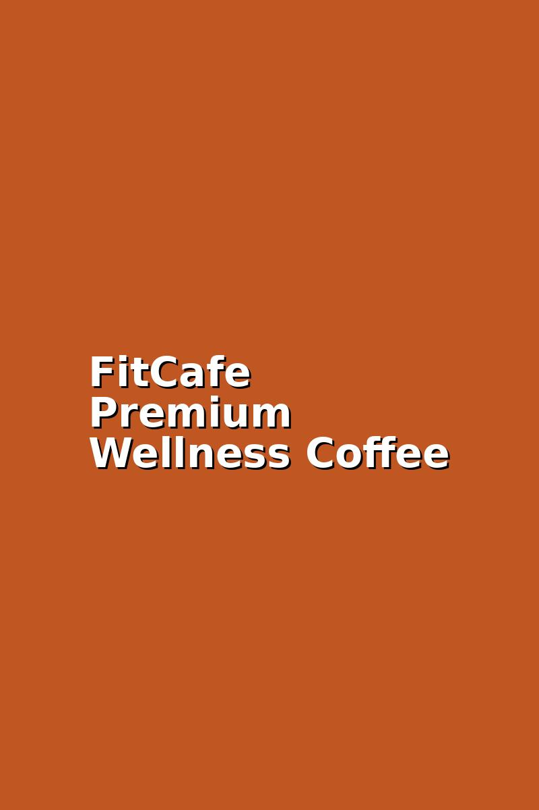
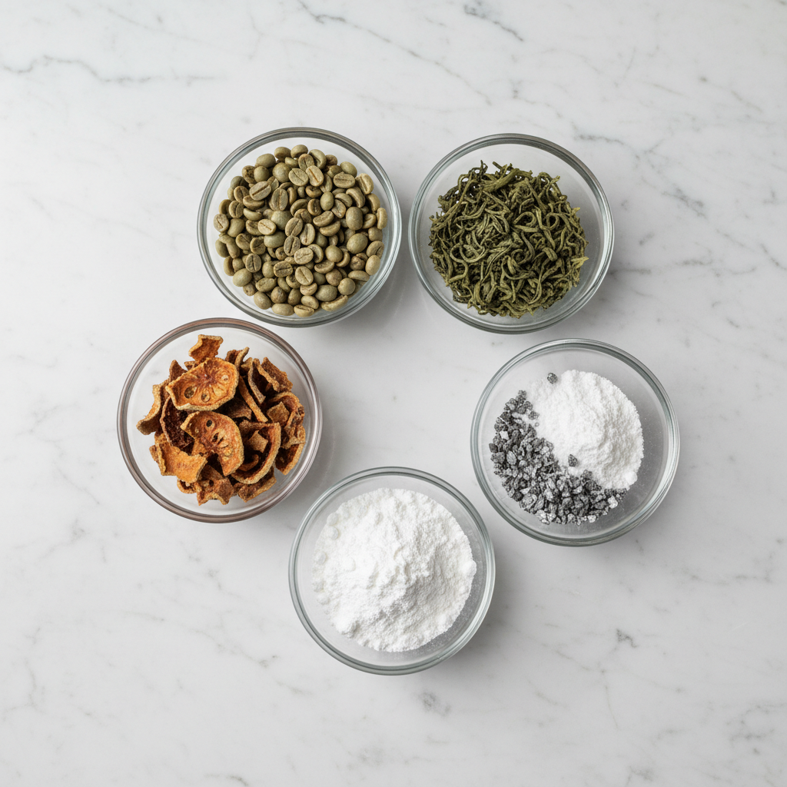

You've probably been here before. You set the alarm 30 minutes early to get a workout in. You meal-prepped on Sunday. You downloaded the calorie-tracking app — again. And for a week, maybe two, things feel possible.
Then life happens. Work gets heavy, sleep gets short, and somewhere between the 3 PM energy crash and the 9 PM couch collapse, the plan quietly falls apart. It's not laziness. It's not a lack of desire. It's exhaustion — and the frustrating feeling that doing everything "right" still isn't moving the needle the way you hoped.
That's exactly the place a lot of FitCafe drinkers were before they found us. Not looking for a miracle. Just looking for something that works with their life instead of asking more of it. A simple swap they could actually stick to. That's the idea FitCafe was built on.
FitCafe is a premium coffee blend designed to replace your everyday cup — and do a little more while it's at it.
It tastes like real coffee because it is real coffee. Smooth, rich, satisfying. But inside every serving is a carefully chosen blend of natural ingredients — each one chosen for a specific reason — that support your body's ability to burn fat, manage appetite, and sustain clean energy throughout the day.
No powders to remember. No extra pills on the counter. No dramatic overhaul to your routine. Just swap your current coffee for FitCafe, drink it the way you normally would, and let the formula do its quiet work.

We believe you deserve to know exactly what you're drinking. Here's what goes into every cup of FitCafe, and what each ingredient actually does:
Coffee before it's roasted retains a compound called chlorogenic acid, which research suggests helps slow the release of glucose into the bloodstream — supporting fat metabolism and helping your body tap into stored energy more efficiently.
One of the most studied natural metabolic supports in the world. Green tea's catechins work alongside caffeine to gently encourage your body to burn more calories throughout the day — even at rest.
This is the secret to why FitCafe feels different from your regular cup. L-Theanine, naturally found in tea leaves, takes the edge off caffeine — giving you alert, focused energy without the jitters, anxiety, or that dreaded afternoon crash.
Chromium helps regulate blood sugar levels, which directly affects how often you feel sudden hunger or sugar cravings. When your blood sugar is stable, those 3 PM snack urges quiet down considerably.
Think of L-Carnitine as a transport system. It helps shuttle fatty acids into your cells' mitochondria — the place where fat gets converted into usable energy. Less stored, more burned.
Derived from a tropical fruit, Garcinia Cambogia contains HCA (hydroxycitric acid), which has been shown to support appetite control and help reduce the conversion of excess carbohydrates into fat.
Every ingredient is transparently listed, properly dosed, and produced in an FDA-registered, GMP-certified facility — so you know exactly what you're getting, every time.
We believe in FitCafe. But more importantly, we believe in giving you real time to decide if it's right for you.
That's why every order comes with a full 180-day money-back guarantee — no jumping through hoops, no "you should have seen results by now" gatekeeping. If you try FitCafe for any reason — or no reason at all — and you're not happy, just reach out within 180 days and we'll refund you in full.
Six months. That's how confident we are that you'll love what FitCafe does for your mornings, your energy, and your progress.
You have nothing to lose — quite literally.
You're already going to drink coffee tomorrow morning. The only question is whether it's working for you or just waking you up.
FitCafe is the simplest swap you'll ever make — and with 180 days to decide, there's genuinely no pressure and no risk.
Try FitCafe — You've Got 180 Days to DecideFree shipping available · 180-day money-back guarantee · Made in an FDA-registered, GMP-certified facility
A better morning is just one cup away. Why not try it and see for yourself?
What FitCafe Drinkers Are Saying
Results vary by individual. FitCafe is designed to support a healthy lifestyle — not replace balanced nutrition and movement.